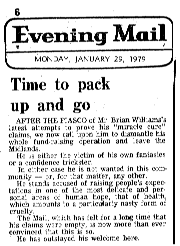

Filming for the BBC8.00pm. I got up at 6.00am as usual this morning, took Freda a cup of tea in bed, then prayed until breakfast. I ’phoned Janet at five to eight. Later I began checking The Power to Heal transcript against the tape. The [BBC} Nationwide crew of six had all gathered [here at Summerlands] by 10.30am and then, to everyone’s disappointment, the lovely sunshine gave way to rain. For the first sequence we had to drive round the Avenue, pull up outside the house, and then go in the front door. The first take was spoiled by rain on the lens, and had to be repeated. The second scene was of the Daimler ascending the hill. This required two takes as we had to await the cue and then start on the hill, and the wheels spun on the snow, spoiling the sound-track. Another sequence was shot in the car as I drove round the Avenue, then we drove down to the cottages [in Bere Lane] for them to film the exterior. (Frank Smith appeared in the window with a camera. I think he thought we had brought the bailiffs in.) By now the sun was shining again, and Mr Rowley thought how nice it would be to have a shot of the Tor with us driving round the corner as from Shepton Mallet, which we did. I pumped the horn to give warning of our impending approach, and the camera rolled [manned by Reg Pope, who has filmed so many series for the BBC, including Some mothers do ’ave ’em]. A Mendip dust passed in front of the camera with only seconds to spare. After this we came indoors to film a sequence in the lounge, in which Tony Francis questioned me for twenty minutes. Afterwards I was a bit disappointed. I realised that I had answered almost everything from scripture but felt sure that scarcely any of it would be used, and not a single minute of the sermon was filmed on Friday either. Tony Francis used the phrase “gigantic ego-trip”, which is how the whole item will be presented on Thursday. Before the crew left for lunch at the George and Pilgrim, I ’phoned [our accountant] Maurice Pratt and obtained the figures from the latest accounts. These show that we made a “loss” last year of more than £5,000. Mr Francis asked for a photograph of me ministering in Africa, so I told him to take one off the board at the Friends Meeting House, or else from the office. The crew are returning to the office tomorrow to film the exterior, and of 112A perhaps. After the crew had gone I ’phoned Janet, then after a late lunch we went to Street to do some shopping. We went to Graham Loveridge in Farm Road to order a part for the vacuum cleaner which broke when Brian [Bosomworth] was using it in the office last week, and also to the baker’s and [Tesco] supermarket. Many items we needed were not available, due to the lorry drivers’ strike. At the newsagent’s the lady assistant said, “Excuse me, but aren’t you Mr & Mrs Williams?” She was Mrs Harding, who lives on the other side of the Jones’ from Frank & Vera. She said how someone had been telling her about yesterday’s article in the Sunday People. When we got home I made a cup of tea and we sat down to listen to the tape Brian recorded for me of one of his preaching engagements, as I wanted to help him with his preaching. However, we were both so tired that we went to sleep. Freda got tea for us, but I was almost too tired to eat. This evening we have watched Ken Dodd and Coronation Street. Brian ’phoned at 8.00pm, then Freda ’phoned Barbara. I forgot to record that Mr Stythe ’phoned at 1.15pm to say that the bank was still not paying our standing order. |
The man in the news10.22pm. We have again had to return to Birmingham prematurely for a radio broadcast. George Mitchell of BBC Radio Birmingham ’phoned us at Summerlands this morning, asking me to be on the Alistair Yates Show. I tried to get him to change it to later in the week, but he said they wanted “the man in the news” to be on as soon as possible, and offered me the alternative of an interview over the ’phone, which I didn’t much like. I ’phoned Janet to ask for Nigel Druckers’ ’phone number so that we could work out a date for the interview with Helen Piddock [on ATV]. Janet asked me about one or two things that had arisen, and then told me that a letter had been received from a firm of solicitors threatening me with legal action for libelling the Evening Mail. I could scarcely believe that the Mail could be so incredibly foolish: the multi-million pound empire of the Mail group of newspapers employing the whole weight of the law to persecute a poor evangelist! It is simply incredible! While I was speaking to Janet, Dad told her to tell me that Nationwide were outside the office, filming in the street. I asked her to bring Mr Rowley to the ’phone, and together we discussed this latest development. I also instructed him to look in the sideboard drawer for the picture he wanted. I spent half the morning on the ’phone. I rang Brian, and he has come down again [from Kirkby Thore], and was here waiting for us when we arrived home at 6.40pm. (We had left Summerlands at 4.16pm). I also ’phoned Nigel Druckers, and we arranged for Helen Piddock to come on Monday at 4.00pm. He asked for a copy of Friday’s tape-recording, which I was able to do for him, and I also made a shortened C90 tape to be copied for the Bible Study members. Freda had the washing to do, marmalade to make, and the bank to go to, but got these all done before we left, and brought the washing back home to iron tonight. While I was loading the car Willem [Koppejan] came by, so I asked him in to request his prayers in the situation. It was then he told me that the Coopers, the people who have been sharing Zebulon Hove, would “hang” him and Helene if they could. The Koppejans have been very good to them: Willem twice made [them] an outright gift of £1,500. So Helene and Willem [who risked his life rescuing Jews, yet is accused of being “Hitler’s astrologer”] are suffering like us, and not for the first time either. We had an excellent journey up the motorway. We listened to Shirley Bassey, the PM programme on Radio 4 and then to Frank Sinatra, and arrived home feeling quite relaxed. Brian had put the fire on and was watching Crossroads, and helped carry everything indoors We had been back only a few minutes when Julia ’phoned to say there was an article attacking us in the Mail again tonight, written by Ed Doolan, and that last night’s paper carried an editorial against us. I think this makes the total sixteen. After tea I did the washing up, then Malcolm called with the Mail article, and stayed for an hour or two. He seems to enjoy the publicity, if no one else does. The family confiscates copies of the Mail to prevent my mother seeing them. |

Monday’s leader in the Birmingham Evening Mail |
|
10.30pm. We sat up late last night watching a debate on the current industrial crisis, and then Something Different, in which Sue Jay interviewed Miss Reeve and Miss Fisher from Hockley Pentecostal Church. They were very good. One of them had a dig at me though. When we went to bed I slept hardly at all until it was nearly time to get up. In the office we had an enormous amount of work: some of the News of the World contacts are now writing for the third time, while many first-time letters continue to come in. Freda and Brian came and helped us n the office, then at 9.30am Freda and I returned home for the Daimler and drove to Pebble Mill for my broadcast on the Alistair Yates Show. Afterwards I was very disappointed and felt I had made a hash of it. I was bending over backwards trying not to refer to the Evening Mail, when almost all the listeners must have known that it was the Mail which has made me almost a household name in this city. Peter Jennings had been on the air earlier, criticising me and saying I ought to be pitied. He was interviewed over the ’phone. But I felt there was no spirit in anything I had said. I had not anticipated the broadcast in any way, and Brian agreed that I sounded flat. Still, the Lord may have blessed the broadcast to someone. I liked Mr Yates. He asked if he might have a copy of Friday’s tape, so I sent Dad with the copy I made for Mr Duckers, and made an extra copy this evening. |
|
7.33pm. The Nationwide feature was broadcast an hour or so ago. We had a fright before it began. The picture became muzzy on BBC1, although BBC2 and ATV were alright, and the lights twice went out momentarily. I videotaped the programme. We thought it was not too bad. Julia ’phoned earlier on to say that Clarice had heard the item announced on TV at lunch time. She had not long gone off the line when she rang again to read the Mail’s latest piece about us — sixteen or seventeen now, this time about the property empire I am trying to build. I wish the bank and one or two other people were as convinced as the media. Mr Buckley, from Barclays, came to the office this morning to obtain our signatures guaranteeing the money for the cottages. Earlier, Freda had ’phoned Mr Pratt [Maurice A. Pratt FCA], who informed us that the finished accounts would not be released to us until we had paid the £459.51 fee. Freda and Brian called on him [at Hardeman Smith & Power] on their way into the city, and he explained that it was none of his doing, but the partners were insisting on it. Freda gave him a cheque for part of the amount, and Mr Pratt came to the office this afternoon for me to sign the accounts. They are the last he will be doing for us, and Mr Pratt himself is being forcibly retired. He expressed his sympathy in the persecution we are undergoing, and said, cryptically, “You have one real enemy behind it all, and his initials are P.J.” Peter Jennings perhaps [but quite wrongly if that is who he meant]. |
|
11.50pm. I have just returned from taking Janet home after the Bible Study, and am sitting in the front room where we had the [meeting] tonight. I spoke on The Excellency of Mary. We continued long after the tape had run out and Arthur had gone home. Brian left for home at about 11.15pm. We have been tremendously busy in the office all week, and had sandwiches as usual. We finished at 5.45pm, leaving perhaps a hundred letters still not dealt with. Brian helped all day, as did Freda except for when she was shopping. John Turner ’phoned from the Bristol Evening Post this morning. He had seen us on TV last night. Otherwise it was a fairly uneventful day and nothing much happened |
|
9.50pm. I took Freda a cup of tea in bed this morning then went to the office where she joined me later. Eva Stewart ’phoned, and later Freda rang Barbara. All had seen us on Nationwide: Alice had invited folk in to see the programme We spent half the morning in the office dealing with the letters. We were hungry when we got home, so Freda made us some toast and marmalade. I went upstairs to pray and study while Freda went to see Mrs Maund. I washed up before and after lunch, then we went to Freda’s mother’s and had a pleasant walk round Grange Road. On our return I began re-reading John G. Lake, Apostle to Africa, but soon went to sleep. After tea I washed up, then we came home and watched a film, Murder on Flight 902. Julia has ’phoned to say that Dad slipped on the ice last night and knocked himself out. He still has a bad head. Barbara told Freda that Psychic News (in which we have advertised) has now exposed us. A friend told her about her cousin [Freda] being exposed. |
|
9.51pm. I got up at 8.45 this morning feeling very listless and wishing I could have the day off just to read and meditate. After breakfast I had to force myself to work on yesterday’s letters, but my enthusiasm returned and I put in a full morning’s work, latterly in the office. After lunch I washed up, then continued working on the letters until 4.00pm when I wanted to watch Enoch Powell being interviewed by Robin Day in The Parliamentarians. But there was a ’phone call from a young woman reporter on the Western Morning Press who questioned me about my persecution of Mr. & Mrs. Smith. I wonder how long it will be before Fleet Street takes up the story? After this we watched a Blue Peter programme about the Bronté sisters, after which I had a bath. Julia had ’phoned earlier, inviting us to tea, and we spent the evening there with the rest of the family. Dad had a headache after his fall on Friday night: he went to see the doctor this morning. |
|
8.28pm. Katie [the neighbours’ cat] came in before 6.15 this morning. I took Freda a cup of tea in bed as usual. Janet and I spent the whole day answering letters. I came home for lunch. Freda helped in the office for much of the day. Dad went to the Alexandra Theatre to book seats for the pantomime in Freda’s birthday, and to the Hippodrome to collect a prospectus for the Sadlers Wells Ballet, which returns next month, We were expecting Helen Piddock from ATV at 4.00pm, but it was Nigel Duckers and the producer John Milton Whatmore who came. We record the programme on Wednesday morning, D.V. Helen has not done the programme before. Sue Jay, the usual presenter, has come to live in Russell Road, Mr Duckers said, at No. 91. |
|
8.26pm. I have felt myself getting more and more tense all day and have a headache this evening. Janet and I had a very good day in the office and got up to date with the News of the World enquiries and follow-up for the first time since the article was published. Some of these new contacts have already sent three gifts. On the other hand, few partners are writing, our financial position is getting desperate, and it is this, coupled with the feeling of helplessness in the face of mountains of correspondence, which we never seem to get on top of. The adverse publicity continues. There has evidently been an article in the Western Morning Press which prompted a ’phone call from Roy Jolliffe of the Central Somerset Gazette, who was amazed to hear our side of the story. Brian ’phoned this evening: Lorna had told him there was an article about us in either the Sunday Express or Daily Express. Nellie Towse wrote in great distress, having been informed by Frank Smith that “it was on Nationwide” that the cottages are to be let and that therefore they must be going to be evicted. John Wiles wrote upbraiding me for having a Daimler. Poor brother, he hasn’t an ounce of malice in him, but is completely hung up about money, and always has been, like his brother Phillip. Freda went to [see] Nellie to put her mind at rest. Janet left on time at 4pm: she was going to the optician to have her eyes tested. I worked until nearly 5.45pm. The freezing weather continues. Although we have had no snow for more than a week and there has been a slow thaw, there is a solid sheet of ice, about two inches thick, on the corner by the bench, where the pavement receives no sunlight. |
THURSDAY 22nd FEBRUARY
Look what happened to Vanessa Redgrave8.36pm. After the traumas of yesterday, things have been a bit better today. We were still sorting out the letters when Freda rang through to say that Maureen Messent and a photographer [from the Evening Mail] had called at the house. The photographer had clicked his camera as Freda opened the front door in her house-coat. Freda talked to her for some time and later, after Freda had herself come to the office, Maureen and the photographer arrived to interview me. Maureen was as affable as usual, and asked me what I was going to do if I gave up full-time ministry. I said I would never give up praying for the sick, and if I took up secular employment I would be quite happy to sweep the roads even. How many people did I expect at tomorrow’s meeting, she asked. “I have no idea,” I said, “We have done no advertising except for Freda’s little letter.” Too late, I remembered the 70 posters which are supposed to have been put up. Maureen said she had seen three on her way to work this morning, so I suppose she thought I was prevaricating. She had also questioned me closely about Arthur [Orr] — it was, of course, his letter that she had come about — and she looked quite triumphant when she asked how it was that the Institute of Chartered Accountants in London had no record of him. Of course, Arthur [being Scottish] is registered in Edinburgh. “Why have you never sued the Mail for libel?” she asked. I told her because, i. Jesus, when he was reviled, reviled not again, ii. Christians do not go to law, iii. I have neither the time nor the money to become involved in litigation, and iv. With the corruption in our legal system I could never expect to receive justice: I pointed out that Vanessa Redgrave had recently sued the Observer for libel. She had in effect won her case: it was proved that the Observer had told a pack of lies about her. But the Court alleged that she was already a bad character, and therefore had not suffered from the libel, and she ended up having to pay £70,000 damages. The Mail has already made me out to be a bad character, so it would be claimed that I had not been harmed by any subsequent libel. This led to Maureen talking about the Palestinian cause, trying to draw me out and to induce me to give expression to anti-Jewish sentiments. She even told me she had contributed £8 to the Arab cause at a meeting in the city. But I was having none of it. I have not the slightest doubt that the Mail is waiting to charge me with anti-Semitism, since they reported the absurd accusations against me by a Jewish M.P. in 1970. Before Maureen Messent’s arrival I had been crying, telling Janet how upset I had been yesterday. Then later on, Janet was crying and said she wanted to leave tomorrow, but later in the day she said she would stay if we were “all” going to be in the office next week. We were answering letters for most of the morning, then Janet cut stencils while I wrote up the accounts. We had lunch at home, then this afternoon I dealt with more letters and checked the latest proofs. Brian [Bosomworth] spent the day extracting addresses from recent letters of people whom we were being asked to write to and pray for. Brian and I came home at 5.15pm, arriving simultaneously with a Mr. Hill, a shopfitter, who was coming to measure up the breakfast room and give us a quotation for floor-to-ceiling cupboards and bookshelves. Dad was a bit better today, Noel said, but he is having to stay in bed; and Dr. Gough said he could not say for sure that he would not have another attack in a few days. Dr. Gough had asked Dad, when he was first called in, what he thought had brought on the attack. Dad said shovelling snow, but Dr. Gough said was it not in fact worrying about Brian, i.e. about the Mail campaign against us, and Dad had to admit that it could have been. Tomorrow is our Faith Temple meeting. We asked the Lord to take away the snow, and suddenly — after all these weeks it has gone, there having been a thaw all the week. We even had a few minutes of sunshine today. Lord, bless us tomorrow. Grant us souls for our labour, and signs and wonders to confirm Thy Word. Amen. |
I am not quite quitting12.09am Saturday. We have just finished pie and chips on our return from the meeting. Brian left for home direct from Bull Street, and we dropped Janet off on our way home. I asked Arthur on Sunday morning if he was sure he wanted to go ahead with the printing of his letter. “You realise,” I said, “that it will be on the front page of the Mail by Thursday night.” What I was anxious about was the possibility of jeopardising his job. I was a day out. It was on the front page today: “I QUIT, SAYS ‘FAITH HEALER’ — Williams thinking of oil rig job.” |
A traumatic week8.49pm. I got up at 8.15am, took Freda a cup of tea in bed, then went to the office to open the letters. Freda joined me in a little while, and we were there all morning, until 1.15pm. The ’phone rang constantly, one call after another, someone ’phoning for prayer, Brian, Eva, Barbara, Mrs. Butler, Derek Simms, a Mr. Massey with a prayer-request, a News Agency, Mrs. Maund. Bill Ludford [of the Evening Mail] called and stayed for about 30-40 minutes. He said he was sick of writing articles about us. “You are either the most honest man I have ever met, or else the biggest fool,” he said, “and I don’t know which.” I feel a great love for Bill Ludford, and for Maureen Messent too, and Freda has said the same. Maureen was not at last night’s meeting, but a young woman reporter was there, and a Mail reporter whom we have seen several times before. They both seemed to write very unobtrusively, even entering into the spirit of the meeting. It wasn’t a specially good meeting but neither was it bad. We had about 60 in the congregation, including people from London, Bristol, Carlisle, Norwich, Wolverhampton. I nearly broke down as I read John 15. But Malcolm Newell [a police constable who had been healed] asked if he could say a word, and spoke out against the Mail, and it brought a wrong spirit into the meeting. Some of our members are becoming almost hysterical about the press, and I have constantly to ask them not to over-react. Last night, instead of preaching, I tried to tell something of the Lord’s dealings in my life, but made a hash of it. But we had a very good healing line. Every month, healings come to light from previous meetings, and last night was no exception. Most notable was a man with a long history of psoriasis, now 80% improved. Several deaf cases were healed: I particularly remember an Indian gentleman who was able to hear perfectly without his deaf-aid. Arthur ’phoned during the afternoon with the shock news that Heather had had a haemorrhage and was in hospital. He did not get to the meeting until about 9.30pm. He looked very pale, and seemed more shocked about the Mail report than anything. Someone at work had shouted out to him, “Written any good begging letters lately?” I never knew that he had had to give Metro-Cammell [his employer] an undertaking not to become involved in any activity which could bring him and them into disrepute. What I did not tell Arthur, because I had forgotten, was that earlier in the day Mr. Adams of the Sunday People had ’phoned. He had also got hold of Arthur’s letter, and will no doubt splash it in tomorrow’s paper. Brian has been very subdued all week, on account of his own financial problems, the crisis in the work, and what he sees as a crisis between me and Freda, and also with Janet. The trouble is that Brian is only now beginning to find out what a life in the ministry is really like, and when he returns home to Kirkby Thore each time, he is insulated for a while from the relentless pressures that the rest of us have to face. It has been a traumatic week. Today, after lunch, we called at my parents’, spent a while with Mam, and then went upstairs to see Dad. He was quite bright and looking fairly well, but with the transparent look of someone who has been very ill. He said he had read two books through, and was now starting a third. I told Mam about the conspiracy between Dad and Clarice and Julia to prevent Mam from knowing the full extent of the Mail’s campaign against us. Every day they scan the paper to see if there is an article about us, and they take the page out if there is. I showed Mam and Dad yesterday’s paper, and we all had a big laugh over it, especially my possibly going to work on an oil rig or as a dustman, which is what Freda had told Maureen Messent. There was a photograph of us both in the office with Freda laughing her head off, this being occasioned by the photographer asking me to have something in my hand, and Maureen Messent saying it should be “something holy”. After visiting my parents we went to Meadow Grove where I finished reading The Prince and the Lily by James Brough. It was very good. |
SATURDAY 3rd MARCH 1979
SATURDAY 10th MARCH
SATURDAY 17th MARCH
WEDNESDAY 28th MARCH 1979
THURSDAY 29th MARCH
...
|